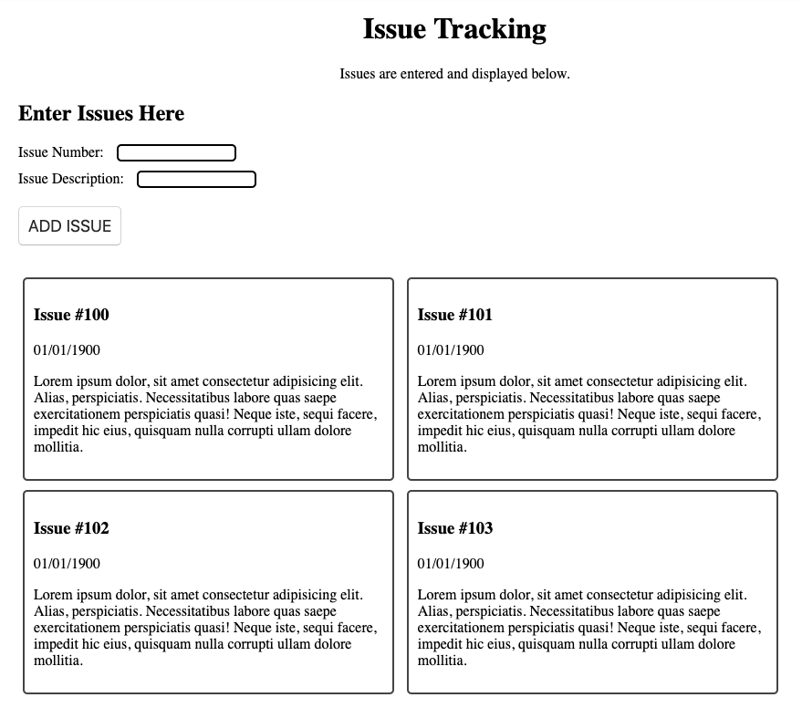

Tissue Offers Bleading Edge Technology
Tissue is here to make team issue tracking simple!

Tissue is a new issue tracking product brought to you by the fine folks at SPC!
With our issue tracking each issue gets a new card and a ticket.
Track Your First Issue